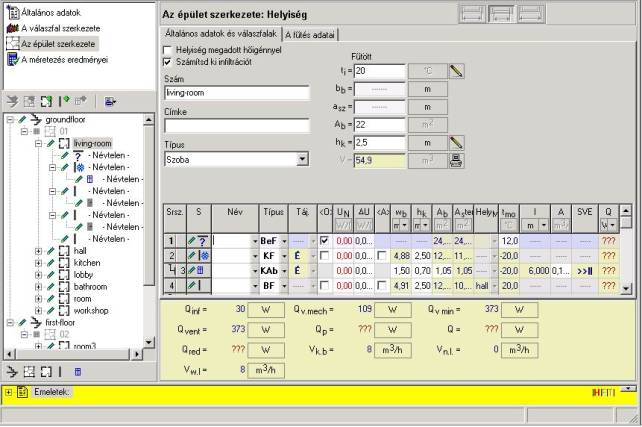
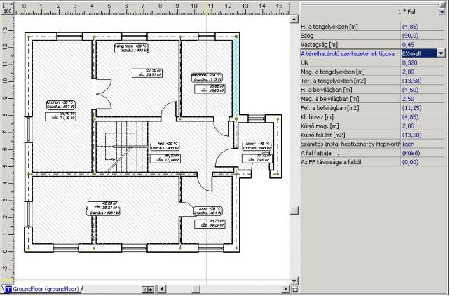

2.5.2. A térelhatárolók azonosítása
¨ A térelhatárolók azonosítása, vagyis a jellemzõik meghatározása érdekében a következõ mûveleteket kell elvégezni:
1. Meg kell nyitni az Instal-heat&energy programot a Programcsomag Intézõbõl. A program megnyitása után megjelenik a program fõmenüje és az eszközsáv. A „Fájl” fõmenübõl ki kell választani a „Megnyitás” utasítást, vagy az eszközsávon a „Megnyitás” nyomógombra kell kattintani. Meg kell keresni a tervnek korábban az Instal-thermben elmentett fájlját, ki kell jelölni, és megnyitni. A program beolvassa a tervet, és megnyitja az „Általános adatoknál”. Az általános adatok kiegészítését a 2.3. fejezet mutatja be.
2. Ki kell választani a terv adatainak listájából az „Épületstruktúra” pozíciót, és a képernyõ alján levõ ikon segítségével ki kell bontani az épületstruktúra nézetét úgy, hogy minden helyiség látható legyen az épületben. A kiválasztott helyiségre kattintva a képernyõ jobb oldalán megjelenik a helyiség adatainak szerkesztési ablaka – „Épületszerkezet: Helyiség”. Az Instal-thermbõl beolvasott tervnek a táblázatában a térelhatárolótípusra, az altérelhatárolókként kiválasztottakhoz történõ hozzárendelésére, valamint a méretekre vonatkozó adatok be vannak írva. A helyiségen belüli és kívüli hõmérsékletek is be lehetnek írva.
Oszlopok: „UN” a térelhatárolók Uo hõvezetési együtthatóinak értékeivel, valamint a „Név” ebben a szakaszban még nincsen kitöltve, vagyis a térelhatárolók nincsenek hozzárendelve a helyiségekhez.

3. Az „Uo” együttható beírásához meg kell határozni a térelhatárolókat. A térelhatárolók meghatározását a 2.4 fejezetben írtuk le.
4. A
definiált térelhatárolókat a helyiségekhez kell rendelni. A hozzárendelést az
Instal-heat&energy táblázatos szerkesztõben vagy az Instal-therm grafikus
szerkesztõben lehet elvégezni.
A térelhatárolóknak a helyiségekhez rendeléséhez az „Épületstruktúra: Helyiség”
szerkesztõablakban, a helyiség adattáblázatában, az adott térelhatároló „Név”
oszlopában a  nyomógomb
használatával deklarálni kell a korábban definiált térelhatároló használatát az
adott helyen. Fontos, hogy a térelhatároló típusához és helyéhez jól rendeljük
hozzá a konstrukcióját. Mivel a térelhatárolók táblázatos hozzárendelése a
felhasználó figyelmét követeli meg, ajánlatos egyidõben az épületszintek
alaprajzát is használni, hogy ne kövessünk el tévedést. Ezért az összetett
terveknél, a térelhatárolók gyorsabb és biztosabb azonosítása érdekében a
hozzárendelést jobb az Instal-therm grafikus szerkesztõjében végezni. Ezért az
összes térelhatároló definiálása után a fájlt el kell menteni a lemezre, és át
kell lépni az Instal-therm porgramba.
nyomógomb
használatával deklarálni kell a korábban definiált térelhatároló használatát az
adott helyen. Fontos, hogy a térelhatároló típusához és helyéhez jól rendeljük
hozzá a konstrukcióját. Mivel a térelhatárolók táblázatos hozzárendelése a
felhasználó figyelmét követeli meg, ajánlatos egyidõben az épületszintek
alaprajzát is használni, hogy ne kövessünk el tévedést. Ezért az összetett
terveknél, a térelhatárolók gyorsabb és biztosabb azonosítása érdekében a
hozzárendelést jobb az Instal-therm grafikus szerkesztõjében végezni. Ezért az
összes térelhatároló definiálása után a fájlt el kell menteni a lemezre, és át
kell lépni az Instal-therm porgramba.
5. A
fájl megnyitása után az
programban, a konkrét térelhatárolónak a rajzalapon konstrukciós típust kell
adni (meg kell adni a térelhatároló konstrukcióját (definícióját)), azaz a
térelhatárolót a helyiséghez kell rendelni. Ehhez át kell lépni a „Konstrukció”
rétegre, és a „Szerkesztés” fõmenübõl a „Minden …típusú elem kijelölése”
>> „Fal” >> „Külsõ” utasítás kiválasztásával az épület összes külsõ
fala kijelölésre kerül. Az adattáblázatban, „Konstrukciótípus” mezõben ki kell
választani a megfelelõ nevet, vagyis térelhatároló-definíciót. Ezen a módon a
külsõ térelhatárolóknak csak akkor lehet típust adni, ha minden külsõ fal
ugyanolyan definíciójú térelhatárolóból épül.
Abban az esetben, ha a külsõ falak különbözõ térelhatároló-definíciójúak, akkor
minden falra külön kell kattintani, és az alaprajz jobb oldalán levõ „Konstrukciótípus”
mezõben, a legördülõ listából ki kell választani a térelhatároló definícióját,
pl. KL-FAL (külsõ fal).

Hasonlóan kell eljárni a belsõ térelhatárolókkal, a külsõ és belsõ falakban található ablakokkal és ajtókkal is, az adattáblázatban kiválasztva a megfelelõ térelhatároló-konstrukció típust.
A vízszintes térelhatárolók – padlókat vagy födémeket a térelhatároló-címkére történõ kattintással kell kiválasztani az alaprajzon, majd hasonlóan, mint a függõleges térelhatárolóknál, típust kell hozzájuk rendelni. Ha az épületszintre nem tettek be vízszintes térelhatárolókat, akkor az épületstruktúrát ki lehet egészíteni ezekkel a térelhatárolókkal, felhasználva a nyomógombot a födém megadásához, valamint a nyomógombot a padló megadásához. A vízszintes térelhatárolókat belsõ és külsõ térelhatárolóként is be lehet tenni.
! A BLOK üzemmód segítségével – a képernyõ jobb alsó sarkában levõ mezõre kattintva – blokkoljuk a munkalap teljes tartalmát, hogy az egyes falak kijelölésekor, azok ne mozduljanak el.
Minden épületszint esetében hasonlóan kell eljárni. Ilyen módon a felhasználó a „Térelhatárolódefiníciókban” meghatározott térelhatárolókat a helyiségekhez rendeli.
Mivel hátra maradt még a grafikus helyiség egyéb adatainak beírása, a szellõztetésre vonatkozók, a terven a további munkát az táblázatos szerkesztõben kell végezni. A felhasználónak el kell mentenie a fájlt a lemezre, és át kell menni az programba.